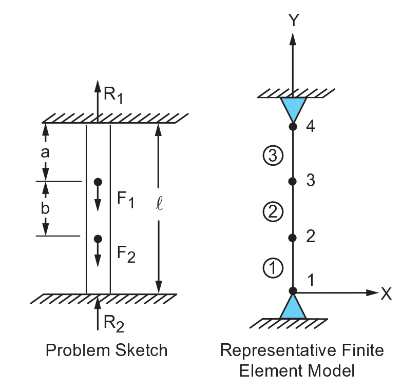

Note
Go to the end to download the full example code
Statically indeterminate reaction force analysis#
- Problem description:
A prismatical bar with built-in ends is loaded axially at two intermediate cross sections. Determine the reactions \(R_1\) and \(R_2\).
- Reference:
S. Timoshenko, Strength of Materials, Part I, Elementary Theory and Problems, 3rd Edition, D. Van Nostrand Co., Inc., New York, NY, 1955, pg. 26, problem 10.
- Analysis type(s):
Static Analysis
ANTYPE=0
- Element type(s):
3-D Spar (or Truss) Elements (LINK180)
{kind=link}

- Material properties
\(E = 30 \cdot 10^6 psi\)
- Geometric properties:
\(a = b = 0.3\)
\(l = 10 in\)
- Loading:
\(F_1 = 2*F_2 = 1000 lb\)
- Analytical equations:
\(P = R_1 + R_2\) where \(P\) is load.
\(\frac{R_2}{R_1} = \frac{a}{b}\) Where \(a\) and \(b\) are the ratios of distances between the load and the wall.
# sphinx_gallery_thumbnail_path = '_static/vm1_setup.png'
from ansys.mapdl.core import launch_mapdl
# start mapdl and clear it
mapdl = launch_mapdl()
mapdl.clear() # optional as MAPDL just started
# enter verification example mode and the pre-processing routine
mapdl.verify()
mapdl.prep7()
*****MAPDL VERIFICATION RUN ONLY*****
DO NOT USE RESULTS FOR PRODUCTION
***** MAPDL ANALYSIS DEFINITION (PREP7) *****
Define material#
Set up the material and its type (a single material, with a linking-type section and a Young’s modulus of 30e6).
mapdl.antype("STATIC")
mapdl.et(1, "LINK180")
mapdl.sectype(1, "LINK")
mapdl.secdata(1)
mapdl.mp("EX", 1, 30e6)
MATERIAL 1 EX = 0.3000000E+08
Define geometry#
Set up the nodes and elements. This creates a mesh just like in the problem setup.
mapdl.n(1, 0, 0)
mapdl.n(2, 0, 4)
mapdl.n(3, 0, 7)
mapdl.n(4, 0, 10)
mapdl.e(1, 2)
mapdl.egen(3, 1, 1)
GENERATE 3 TOTAL SETS OF ELEMENTS WITH NODE INCREMENT OF 1
SET IS SELECTED ELEMENTS IN RANGE 1 TO 1 IN STEPS OF 1
MAXIMUM ELEMENT NUMBER= 3
Define boundary conditions#
Full constrain nodes 1 and 4, by incrementing from node 1 to node 4 in steps of 3. Apply y-direction forces to nodes 2 and 3, with values of -500 lb and -1000 lb respectively. Then exit prep7.
Effectiely, this sets: - \(F_1 = 2*F_2 = 1000 lb\)
mapdl.d(1, "ALL", "", "", 4, 3)
mapdl.f(2, "FY", -500)
mapdl.f(3, "FY", -1000)
mapdl.finish()
***** ROUTINE COMPLETED ***** CP = 0.000
Solve#
Enter solution mode and solve the system.
mapdl.run("/SOLU")
out = mapdl.solve()
mapdl.finish()
FINISH SOLUTION PROCESSING
***** ROUTINE COMPLETED ***** CP = 0.000
Post-processing#
Enter post-processing. Select the nodes at y=10 and y=0, and
sum the forces there. Then store the y-components in two variables:
reaction_1 and reaction_2.
mapdl.post1()
mapdl.nsel("S", "LOC", "Y", 10)
mapdl.fsum()
reaction_1 = mapdl.get("REAC_1", "FSUM", "", "ITEM", "FY")
mapdl.nsel("S", "LOC", "Y", 0)
mapdl.fsum()
reaction_2 = mapdl.get("REAC_2", "FSUM", "", "ITEM", "FY")
Check results#
Now that we have the reaction forces we can compare them to the expected values of 900 lbs and 600 lbs for reactions 1 and 2 respectively.
Analytical results obtained from: - \(P = R_1 + R_2\) where \(P\) is load of 1500 lbs - \(\frac{R_2}{R_1} = \frac{a}{b}\)
Hint: Solve for each reaction force independently.
results = f"""
--------------------- RESULTS COMPARISON ---------------------
| TARGET | Mechanical APDL | RATIO
/INPUT FILE= LINE= 0
R1, lb 900.0 {abs(reaction_1)} {abs(reaction_1) / 900}
R2, lb 600.0 {abs(reaction_2)} {abs(reaction_2) / 600}
----------------------------------------------------------------
"""
print(results)
--------------------- RESULTS COMPARISON ---------------------
| TARGET | Mechanical APDL | RATIO
/INPUT FILE= LINE= 0
R1, lb 900.0 900.0 1.0
R2, lb 600.0 600.0 1.0
----------------------------------------------------------------
Stop MAPDL.
mapdl.exit()
Total running time of the script: (0 minutes 0.691 seconds)